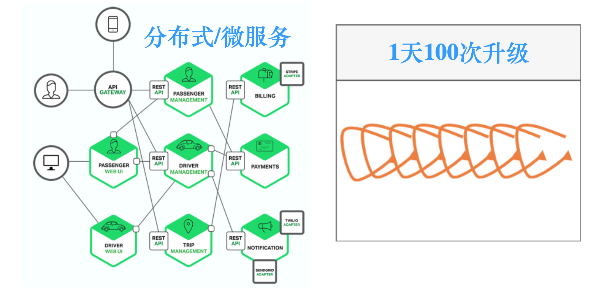
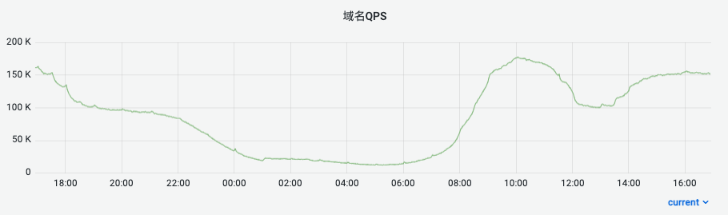

Characteristics of Internet Business
A Sharp Rise in the Number of Applications
As of the end of June 2022, the number of apps monitored on the Chinese domestic market was 2.32 million, and the number of websites was 3.98 million.
How many programmers does China have? I could not find 2022 data; in 2021 China had 7.55 million programmers, second in the world.
But these programmers are not only building those apps and websites. The part we come into direct contact with is the frontend, but does the backend need programmers too? And to recommend products based on your search history, are data analysts needed as well?
Beyond that there is embedded work, foundational software such as databases and gateways, infrastructure such as storage and networking, and supporting roles in operations and testing.
In practice, on average, each programmer is responsible for a great many projects and items.
A Sharp Rise in the Number of Services

With the rise of microservices, the number of services has increased sharply. For one application, a handful of microservices is on the low side; dozens is typical, and some reach over a hundred.
With so many services, how do you deploy them, how do you monitor them, and when something goes wrong how do you find the problem quickly? In distributed scenarios the logs and call relationships of each service are scattered, which makes finding a fault quickly very hard.
This sharp rise in the number of services has raised the complexity of operations and brought operations teams a serious challenge.
Ever More Frequent Updates
Everyone has felt how fast mobile apps update. WeChat releases every 2-3 weeks; Netflix's microservices deploy 1000 times a day.
Why keep such a high frequency? What is an update doing?
- Fixing bugs
- Optimizing
- Adding new features
Through continuous iteration and updates, the product becomes more competitive and supports the business in making money.
Large Traffic Fluctuations

Office applications see traffic spike during working hours; leisure applications see traffic spike outside working hours.
At other times resources sit largely idle. If you provision compute and network resources for the traffic peak, that looks very wasteful.
But peaks and troughs are the normal state of internet applications. During a big promotion, if the infrastructure goes down and payment stops working, the boss may well show you the door.